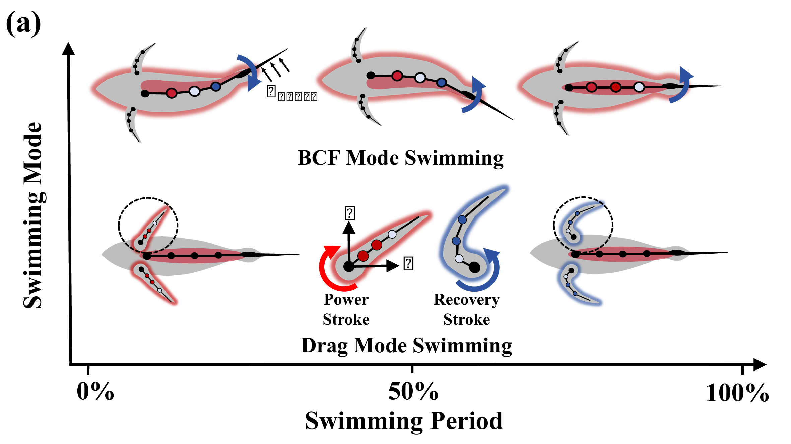
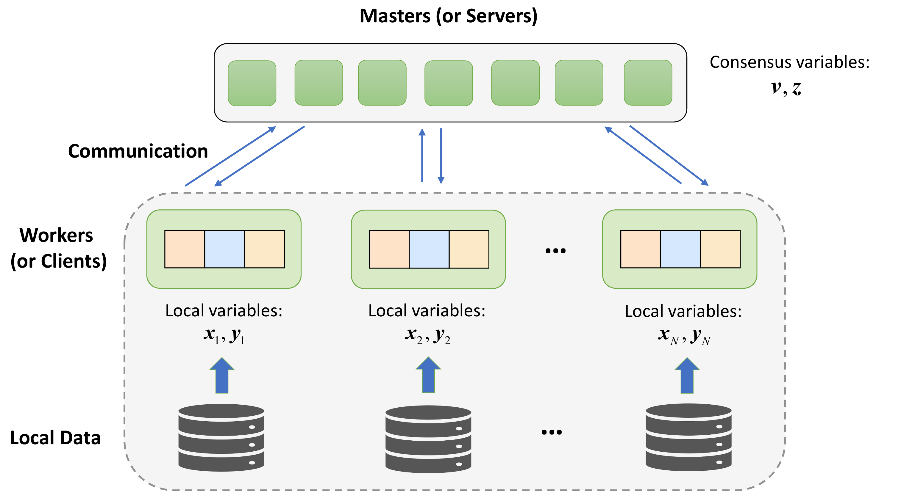

|
Tiancheng (Tony) Wu I am a MS in Robotics student at the CMU Robotics Institute. I am fortunate to be advised by Prof. Zackory Erickson, and I was also privileged to work closely with Prof. David Held. Previously, I received my bachelor's degree in Computer Science from Tongji University, where I was honored to be advised by Prof. Kai Yang. I aspire to become a full-stack roboticist developing generalist robots that operate seamlessly in everyday human environments. |

|
Research |
|
 |
Spatiotemporal Stiffness Modulation for Efficient Aquatic Robot
Locomotion
Junzhe Hu*, Jeong Hun Lee*, Tiancheng Wu, Guo Ning Sue, Jiahe Liao, Zackory Erickson, Zachary Manchester, Carmel Majidi* npj Robotics, Under Review paper |

|
Geometric Red-Teaming for Robotic Manipulation
Divyam Goel, Yufei Wang, Tiancheng Wu, Helen Qiao, Pavel Piliptchak, David Held*, Zackory Erickson* CoRL 2025 arXiv / code / website |
|
Provably Convergent Federated Trilevel Learning
Yang Jiao, Kai Yang*, Tiancheng Wu, Chengtao Jian, Jianwei Huang AAAI 2024 arXiv |
|
|
 |
Asynchronous Distributed Bilevel Optimization
Yang Jiao, Kai Yang*, Tiancheng Wu, Dongjin Song, Chengtao Jian ICLR 2023 arXiv |
|
Last update: Nov 2025 |
Website template from Jon Barron |